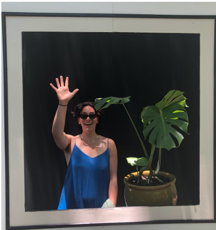
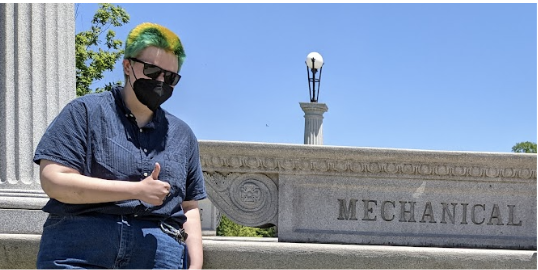
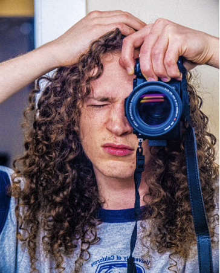
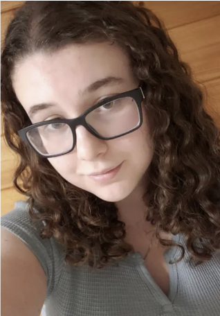

Meet the Team!
Hey there! We're the team behind Big Knit. We wanted to combine our shared interests and heavy-mechanical skillset to make something cool!
All of us have different skills and sought to get different things from this project. Our learning goals shifted over the course of the work, but at the start and until the end, they are what drove us to see this project through. Learn a little about us and where we were focused on Big Knit.
I'm Zipporah! I owned the firmware and coding side of this project including this website. As a part of that, I also lent hands on the electrical side. I wanted to keep improving my thinking about coding specifically for firmware and get more comfortable working with my hands (thank you, circuitry). In my spare time, I like to bike, ferment things, and tend to plants.
-
I'm Oliver! I worked on the mechanical side of this project. I primarily focused on the parts of the machine that were directly responsible for knitting, mainly the needles and table which held the yarn in place and made each stitch. Outside of engineering, I spend my time baking, directing plays, and giving haircuts in unconventional locations.
-
I'm James! I worked on designing and integrating the electrical systems, from choosing power supplies, motor controllers, to making robust and flexible wiring. I also helped with machining and integrating all assemblies. I’m a photographer, designer, and I love to cook and skateboard in my free time
-
I'm Miriam! I worked on the mechanical side of this project. I mostly focused on mounting the gantry system, which was composed of custom pieces that I designed and fabricated. Outside of engineering, I spend my free time making coffee, painting, and baking with Oliver.